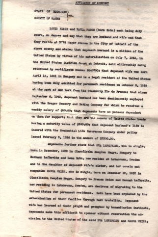
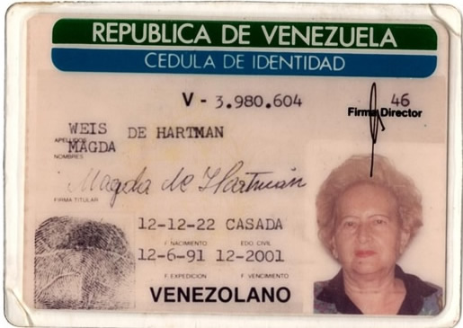

Ancestros de mi Abuela Elena.
Todos ellos provienen de la zona de laotrora Checoslovaquia y lo que se conoce como Hungría hoy día.
Todo comenzó con Moshe Hartman y Hanny Adler, quienes concibieron a Joseph, quien se casó con Ilona (Ilonca de cariño) Coraj. Ellos tuvieron 14 hijos, entre ellos el muy querido abuelo materno de mi mamá: Pal. Entre los nombres de sus hijos, conocemos que Luis era el mayor, Luego Alejandro (Shandor) que nació en 1884, a quien mi mamá conoció. También están y ya no seguimos el orden: Shimon, Ernesto, Rene, Elizabeth, y la menor Edith.
Sabemos que Joseph mi tátara abuelo era mayorista de trigo y cayó en la ruina y le costó mucho salir adelante tras este debacle en su vida, pero luego el Rey le dio la concesión de estampillas y de eso vivió.
Su hijomayor, Luis se fue a América, Detroit específicamente, los detalles del porque se fue los desconozco. Se casó con Irma y tuvo una hija llamada Beatriz (BiBi).
Shandor el segundo hijo también emigró. Él por su parte llegó a Venezuela con su esposa y tres hijos; Imre, Judith y Maritza. Tampoco conozco los detalles de su partida y en especial del por qué eligió Venezuela como lugar de llegada.
Ernesto se casa con Shtefi en Hungría y tuvieron 1 hijo llamado Andrés, quien vive hoy día en Vancouver.
Edith llegó a Venezuela el 31 de agosto de 1939. Se casa con Yenu Kepetz y tuvo dos hijos, Roberto y Tomás.
Mi bisabuelo Poli (como lo llamaban de cariño) nació el 26 de octubre, en el año de 1912. Al cumplir los 17 años sale de Hungría escapando del servicio militar obligatorio. Llegó a Yugoslavia, luego a Italia y de ahí embarcase para llegar a Venezuela, donde lo esperaba su hermano Shandor.
Llega en el año 1930, cuando Juan Vicente Gómez era dirigente del país. Mi bisabuelo y su hermano se instalan en Maracay, ciudad pujante ya que ahí residía el gran Dictador. Poli trabajó como mesonero en un club muy famoso al que frecuentaba el mismísimo Juan Vicente, el cual (según las palabras de Puchu, sobrino de mi bisabuelo) apreciaba el trabajo de éste y le daba buenas propinas.
Mi bisabuelo era muy feliz en Maracay, pero una vez fallecido el generalísimo, la ciudad decayó en importancia y él y su hermano deciden mudarse a Caracas, capital del país. Ahí son dueños de una fuente de soda en el Conde, la cual iba muy bien.
En el año de 1946, mi bisabuelo viaja a Detroit para visitar a su hermano Luis. Lo que él no sabía, es que D-os estaba dirigiendo su camino para conocer a la que sería su futura esposa.
Volvamos por un instante al siglo XIX, Época en la que Samuel Lefkovitz, quien quedó huérfano muy joven y vivía en Olazslizska, Hungría, se casa con Kathy Roth, también oriunda del mismo pueblo, quien era 10 años menor que él. Ellos eran muy ricos, tenían viñedos, eran terratenientes, y dueños de almacenes de trigo, también poseían carretas, lo cual mostraba ante la gente cuan ricos eran. Ellos fueron muy felices.
Tuvieron 6 niñas y 3 o 4 varones (mi bisabuela Magda no lo recordaba bien) Los nombres de algunos fueron: de la primera hija, no recuerda el nombre, sin embargo rememoró que se casó con un hombre de apellido Berger y tuvo tres hijos: Ilan, Margit y Herman. Quienes quedaron huérfanos pues ella falleció a temprana edad.
Shari y Clara, las dos casadas con dos hermanos de apellido Shwartz.
Berta, casada con un primo de apellido también Lefkoviyz, ella y mi tátara abuela eran muy unidas, eran mejores hermanas. Ella tuvo 2 varones y 1 hembra. También murió muy joven y mi bisabuela recuerda que su mamá se desmayó del dolor tan profundo que sintió al escuchar la noticia.
Regina, era la menor y la favorita de su familia. Tuvo dos hijas: Magda, quien fue asesinada en Auschwitz y Ela que se fue a vivir a Israel, fue cantante y se casó con un hombre de apellido Vardi con el que tuvo a Uri un famoso chelista, quien por cierto mi mamá conoció ya que el venia mucho a Venezuela, invitado por el Colegio Emil Friedman para tocar frente a una importante audiencia.
Berta tenía un morocho, llamado Yeno, quien se casó en Checoslovaquia y cuando Hitler anexa este país le pegaron un tiro por ser judío y murió. Tuvo 2 hijos morochos, un niño y una niña quienes fueron asesinados durante la Shoah.
Y Hanny, mi tátara abuela quien se casó con mi tátara abuelo Pinjas Weisz.
Pinjas era hijo de Elias Weisz y Sara Rubin, los dos de Checoslovaquia. Ellos no eran muy ricos en lo que a lo material se refiere pero eran ricos en “EMUNA” fe, ya que ellos eran muy observantes de las leyes de la Torah. Tuvieron 3 varones y 4 niñas.
Mi Tátara abuelo nació en Zsomator y estudió en una Yeshiva, era el más ortodoxo de su familia. Él quería mucho a sus hermanas, quienes eran muy hermosas. Tenía un aserradero y vendía madera.
Se casó con Hanny Lefkowitz y fueron muy felices hasta que lamentablemente mi tátara abuela Hanny murió de tifus cuando tenía cuarenta y cuatro años. Tuvieron 7 hijos: Moritz, Shari, Regina, Malvin (Magda, mi bisabuela), Miksha, Olga y Emil..
Lápida de mi tátara abuela Hanna
Moritz, trabajaba con su padre vendiendo madera. Sobrevivió a la guerra, volvió a su ciudad natal y se casó con Goldi. Tiene tres hijos Hanny, Pinjas y Yehuda. En el año 1955 inmigran a los Estados Unidos, específicamente New York. Hoy día Moritz no se encuentra con nosotros físicamente pero créanme cuando les digo que dejó una descendencia inmensa. Sus hijos son todos muy ortodoxos y han cumplido a cabalidad con el precepto de “Creced y multiplicaos”
Parte de la familia de Moritz
Olga se casó con Armin Taub, quien tenía una hermosa voz, la cual heredó su pequeño hijo Yuri (George). Ellos Vivian en otro pueblo, pero a Armin se lo llevaron a realizar trabajos forzosos, durante la Segunda Guerra Mundial, y Olga se fue con su hijo a vivir en la casa de su padre. Los dos fueron gaseados en Aschwitz. El pequeño Yuri tenía únicamente 4 años.
Regina, murió de tifus, enfermedad que adquirió en Bergen Belsen. Llegó a ser liberada pero no sobrevivió a la enfermedad.
Miksha, sobrevivió a la guerra, volvió a Hungría y luego se fue a Venezuela donde ya se encontraba mi bisabuela Magda. El residió en Maracaibo, se casó con Hildy Hamburger (también oriunda de Hungría) y tuvieron a Andrés, quien vive hoy día en Miami y está casado con Patricia Nath, la hermana de Sandra Nath amiga de promoción de mi mamá. Tienen dos hijas Daniela y Michel. Mi Tío Bisabuelo Miksha murió del corazón a una edad muy joven, justo antes que su hijo hiciera bar mitzva. Esta muerte mi bisabuela nunca la superó.
Olga, también sobrevivió los horrores del gueto, campo de trabajo y concentración, pero no sobrevivió al tifus que contrajo en Bergen Belsen.
Emil, el más pequeño emigró a los Estados Unido a Detroit Michigan y ahí se casó con Lilian y tuvo a tres hijos. Joan, Glen, y Mark. El murió muy joven, a los 36 años del corazón.
Antes de comenzar con la biografía de mi bisabuela Magda quisiera compartir unas anécdotas y recuerdos especiales que ella tenía de su familia.
De su abuelo Samuel (papá de su mamá) recuerda que era un hombre de carácter muy fuerte, era muy duro decía ella, pero recuerda que él solía entrar a las tiendas de telas y siempre le compraba telas a mi bisabuela, únicamente a ella y luego con eso confeccionaban un vestido.
Ella contaba que él era muy protector de su mujer. De hecho no permitió que amamantara a sus hijos, para que ella no se esforzara demasiado y por eso contrató a una nodriza.
De su abuela Sara (mama de su papá) recuerda que era un ángel, una mujer buena y dulce. Ella preparaba conservas y a mi abuela le encantaba, pero siempre las estaban guardando para ocasiones especiales, así que mi bisabuela Magda se fue al cuarto donde se encontraban las conservas y les hizo un hueco para que se echara a perder y las pudiera comer.
Se supone que mi bisabuela se parecía mucho a su abuela, y que por eso su papá la quería a ella más que a nadie.
Mi Bisabuela consideraba a su papá un sabio, el cual nunca se equivocaba. Decía que su papá siempre tenía los bolsillos llenos de galletas y caramelos.
Recuerda un anécdota especial, y es que a pesar de su papá ser muy observante, dejaba a sus hijas bañarse en el río en traje de baño y ella recuerda que lo criticaban por esto, a lo que él contestó que no quería que sus hijas se distinguieran de las demás muchachas, no quería que la gente las vieran como las raras.
De su mamá recuerda que cuando prendía las velas de Shabat agarraba a todos sus hijos, los abrazaba y los bendecía en Idish. La recuerda como una buena madre como a un ángel.
Malvin Weiz (mi bisabuela) nació un 12 de diciembre (17 de kislev) de 1917 en Olaszliska, Hungría. Ella fue una niña muy activa, siempre corriendo, trepando árboles, atrevida, nunca tenía miedo de nada. A pesar de quedar huérfana de madre a los doce años, ella describe su infancia como una muy feliz. Según lo que recuerda, vivían en una casa bonita y grande, la cual tenía una sala, cuatro o cinco dormitorios, una cocina grande y del otro lado una suca hecha con madera que podía levantarse cuando terminaba la festividad de Succot.
No eran ni muy ricos ni muy pobres, vivían bien y cuando llegaban las fiestas religiosas siempre compraban vestidos y zapatos nuevos. Eran ortodoxos, pero nada radicales. Recuerda que asistía a una escuela en la que todos eran judíos. A ella le encantaba leer, jugar cartas y bordar. Nunca se aburría y tenía muchos amigos que pasaban mucho tiempo en su casa ya que a su papá (mi tátara abuelo) le gustaba tener la casa llena. Recuerda haber tenido también amigos no judíos y que ellos siempre la trataron muy bien.
En el año de 1943 llegaron los alemanes y empezaron a sentir que los húngaros eran sus enemigos. Debían llevar la estrella amarilla y no podían salir de casa, especialmente por la apariencia religiosa de su padre. Ahora, les gritaban cosas feas decía ella. Su papá dejo de trabajar, pues ya nadie quería hacer casas y no había comida.
Un día del año 1944 mandaron a los judíos del pueblo a reunirse en la sinagoga y les informaron que debían salir de su pueblo. Los llevarían a un lugar más “seguro” dijeron y que los jóvenes trabajarían, mientras que los viejos y niños serían cuidados. Y ellos les creyeron. “Nosotros nunca habíamos tenido noticias de lo que ocurría en Polonia, ni de los guetos” decía mi bisabuela.
Ella y su familia llegaron al gueto después de Pesaj del 44. Para ese entonces no había mucha gente ya que se habían llevado a la mayoría a Aushwitz. Su grupo fue el último en llegar a ese lugar. Vivían en una casa con otras familias y todos dormían en el piso. Recuerda haber pasado mucha hambre, ya que comían una vez al día una papa.
Una semana después de Shabuot los llevaron a Auschwitz. Fueron el último grupo en salir del gueto. “Dijeron que nos llevarían a Auschwitz y otra vez escuchamos que los jóvenes trabajaríamos mientras que los viejos y niños serian cuidados. Nunca habíamos escuchado ese nombre.” Decía mí bis abuela.
Cuando llegaron al campo los separaron: mujeres a un lado, hombres al otro, y niños a otro lado. Ahí se separó de su padre al que no volvería a ver. En Auschwitz se encontró con una amiga que había llegado dos semanas antes, al verla le pregunto por sus padres a lo que contesto: “¿Mis padres? ¿Tú ves esa chimenea? Allá están” En eso momento lo comprendió todo.
Las llevaron a una casa grande, donde las despojaron de todo lo que poseían y les cortaron todo el pelo, les dieron nuevas vestimentas y las marcaron como animales. A la mañana siguiente las trasladaron a Plaszow. Ahí trabajaban pintando uniformes nazis de blanco. Estuvieron cinco semanas y luego regresaron a Auschwitz, donde la tatuaron. Su número de tatuaje era 23.704. Allá no trabajo, cuenta que sólo las ponían en filas de cinco y ahí se quedaba parada todo el día. Ahí se quedaron unas semanas, para luego ser trasladadas a Breslow, en Polonia, donde trabajó haciendo balas.
Recuerda el hambre, todos hablaban de comida y se pasaban recetas. También pasaban mucho frío, pues únicamente tenían el vestido que les habían dado.
En diciembre de 1944, estaban muy cerca del final de la guerra y las llevaron a ella y sus dos hermanas, Olga y Regina a Bergen Belsen. Caminaron 4 semanas, con frío y sin comida. Bergen-Belsen estaba infestado de tifus, mi bis abuela recuerda llegar de noche y ver montañas y a la mañana se dio cuenta que eran pilas de muertos. De treinta a cuarenta cadáveres botaban todas las mañanas de enfermos. Ahí desafortunadamente fueron contagiadas sus dos hermanas y una prima quienes más tarde fallecen, quedando mi bisabuela sola con una prima llamada Eva.
Aqui un documento que mi bisabuela llenó, detallando con fechas los lugares que recorrió durante la Shoa.
Al ser “liberadas” Las trasladaron a Suecia en un barco, ahí se quedarían hasta recuperarse del todo. Mi bisabuela tomo la decisión de nunca jamás regresar a Hungría, por lo que le ofrecieron trasladarla a Israel pero ella se empeñó en que quería ir a Estados Unidos, pero para llegar allá debía ser pedida por una familia, la cual ella no tenía. Sin embargo, su prima Eva si tenía un tío en Detroit y solicitó que la pidieran a ella y a su prima ahora llamada Magda. Y así fue. Embarcaron de Suecia hacia Nueva York y luego viajaron a Detroit. Tres días después de llegar conoció a una familia que tenía una visita: el joven que sería su futuro esposo .

Ilustración 13Petición de ingreso de mi bisabuela por parte de la familia de su prima Eva, que vivía enlos Estados Unidos.
Y en este punto la historia de mi bisabuelo Paul y mi bisabuela Magda se juntan para formar una sola. Se conocieron un viernes, y el domingo mi bisabuelo debía viajar de vuelta a Venezuela porque tenía su negocio allá, pero decidió que no quería dejar pasar la oportunidad de conocer a esta bella chica, por lo que decidió encargarle el negocio a su hermano y quedarse en Detroit tres meses. Pidió la mano de Magda y se casaron el 15 de septiembre de 1946 y luego se fueron a vivir a Venezuela.

Petición para suministrar requisitos para la ciudadanía venezolana, de parte de mí bisabuela. Y su documento de permiso de ingreso y residencia. Firmada en Maiquetía el 17/11/1946. Y su cédula de identidad.
En Venezuela se rodearon de amigos húngaros. Mi bisabuela trataba de cumplir con lo que podía de la religión; mantenía su casa kosher y cuidaba del shabat, mientras que mi bisabuelo no era muy observante pero la respetaba. Trabajaron muy duro ya que al poco tiempo de casarse, mi bisabuelo y su hermano Shandor decidieron vender la fuente de soda por un muy buen precio. No fue la decisión correcta, pues el dinero se esfumó rápidamente y quedaron sin trabajo. Mi Bisabuela Magda era muy trabajadora y no se dejó caer, así que echándole mucho esfuerzo logró montar una fábrica de ropa de damas en el centro de Caracas, donde trabajaron los dos hasta el año 1988.
Tuvieron tres hijas: Mi abuela Elena, mi tía Vicky y mi tía Verónica.
Mi bisabuela Magda cocinaba excelente, era famosa especialmente por sus dulces, lo que hacía que la casa estuviera siempre llena de los amigos de sus hijas.
Su hija Vicky se casó con Harry Szajderman y tuvieron a Daniel. Mi tía Verónica se casó con Ricardo Hausmann y tuvieron a Michel y Carolina. Hoy día mi tía se volvió a casar con Peter Korda.
Michel está casado con Meirav Barak y tienen tres hijos: Ilan, Irene y Ariel. Por su parte Carolina se casó con Jacky Esayag y tienen tres hijos: Adam, Jonathan y Noah.

Mis bisabuelos Poli y Magda rodeada de sus hijas y esposos y los nietos.
Mi bisabuelo Poli sólo vio casarse a dos nietos Ruben y Nina, y conoció a 4 bisnietos: Deborah, Arie, Tania y Jacky (primeros cuatro hijos de mi tía Nina). El falleció el 30 de mayo del año 2002 a los casi 90 años.
Mi mamá amó a su abuelo Poli, dice que era el abuelo más cariñoso, ella dice que puede todavía rememorar lo que sentía cuando este la abrazaba. Era bueno, pasivo y muy callado, nunca hablaba mal de nadie y se quedaba sentado en la sala solo escuchando lo que los demás tenían que decir. Eso sí, ella recuerda que se transformaba al estar tras el volante, pues quien se le cruzaba con el carro este le insultaba (lo que no pegaba para nada con su carácter). Mi mamá nunca olvidará su “muña muña muña” Así le decía a los nietos mientras les daba cariño. Recuerda que ellos (sus abuelos) por vivir en San Bernardino, zona en la que robaban muchos automóviles, entonces su abuelo se paraba casi todo el tiempo que duraba la visita de sus nietos o hijas en la ventana vigilando que nadie se fuera acercar a sus carros.
Mi mamá lo describe como un hombre bello, con unos ojos tiernos de color azul y un cabello liso plateado y una sonrisa dulce. Tenía piernas musculosas de futbolista, pues él jugaba al futbol de joven. Y era muy servicial, pues mientras mi bisabuela cocinaba, él se encargaba de retirar los platos y colaborar con la limpieza, Era un ser muy especial y mi mamá lo recuerda con especial cariño.
Mi bisabuela continúo viviendo en el apartamento sola hasta el año 2006, cuando se cayó y se fracturó la pierna, por lo que mi abuela Elena se la llevó a vivir con ella y mi abuelo Arie a su casa.
Yo todavía recuerdo el apartamento, sobretodo recuerdo la mesita que se encontraba en la sala, pues siempre estaba llena de dulces.
Mi bisabuela nunca se sintió a gusto en casa de mi abuela Elena, no porque la trataran mal, sino que ella era una mujer muy independiente y no le gustaba depender de nadie y mucho menos molestar. Aunque no molestaba ella sentía que era una carga para su familia.
Nosotros los nietos, por nuestra parte, agradecemos inmensamente el hecho que viviera con nuestra abuela, pues tuvimos la oportunidad de tenerla cerca por muchos años. Especialmente mi familia quienes vivimos varias veces en la casa de mi abuela pudimos compartir mucho con ella.
Y ella también estaba contenta, y lo puedo corroborar pues su biografía está plasmada en el libro “Exilio a la vida, tomo III” y en ese escrito ella dice “Pero estoy contenta; Cuando es sábado, aquí tengo a todos los nietos (se refería a los bisnietos), ellos bailan y juegan. Esa es mi familia, mi VIDA”.
Mi bisabuela si vivió para ser testigo que su terrible experiencia, tuvo un final prospero.
Ella compartió muchos años con sus hijas, quienes la amaban y respetaban. Tuvo 7 nietos a quienes adoraba y conoció 25 bisnietos a quienes veía bailar, jugar y cantar, a quienes ofrecía caramelos cada vez que venían a visitarla. Y tuvo la dicha de estar presente para abrazar a 2 tataranietos.
Murió el miércoles 28 de marzo a las 7:30 de la noche, 2 días antes de Pesaj lo que sería en fecha hebrea un 13 de Nisan de 5778 (2018) a los 100 años de edad.
¿Por qué ella sobrevivió? solo el creador conoce los detalles de esa respuesta, pero una vez escuché a mi mamá en clases diciendo que tal vez una de las razones de su supervivencia tiene que ver con sus descendientes, en este caso mi mamá decía, que tal vez ella sobrevivió porque D-os quería que su nieta en este caso mi madre impartiera clases de Tanaj y sabía que ella tendría la oportunidad de llegarle a muchos jóvenes. Y eso se aplica a todos los descendientes de mi bisabuela. Existe un plan mayor que nosotros desconocemos pero debemos aferrarnos a la idea que todo pasa por un bien mayor, y en este caso solo me queda pensar que yo formo parte de el.
Mi
bisabuela en el medio rodeada de sus hija y sus respectivos esposos y
los nietos, bisnietos y tátaranieta de parte de su hija Elena.
Añuca (como la llamabamos) yo y mis hermanos.